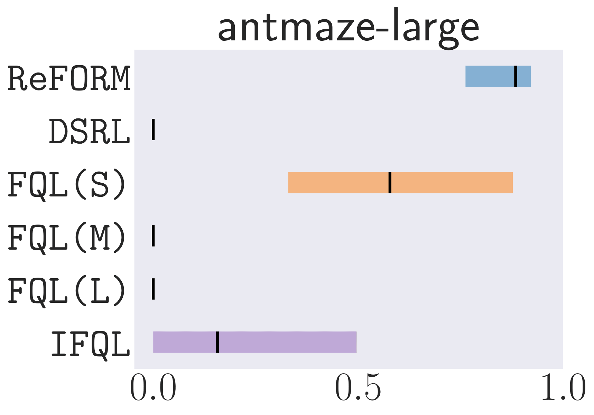
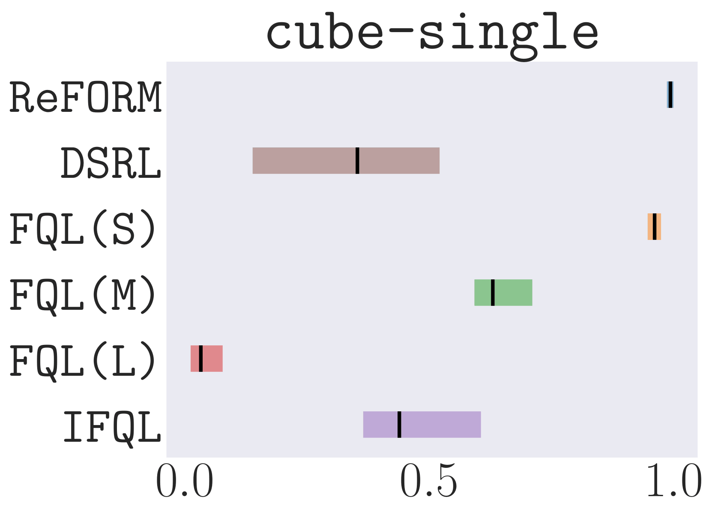
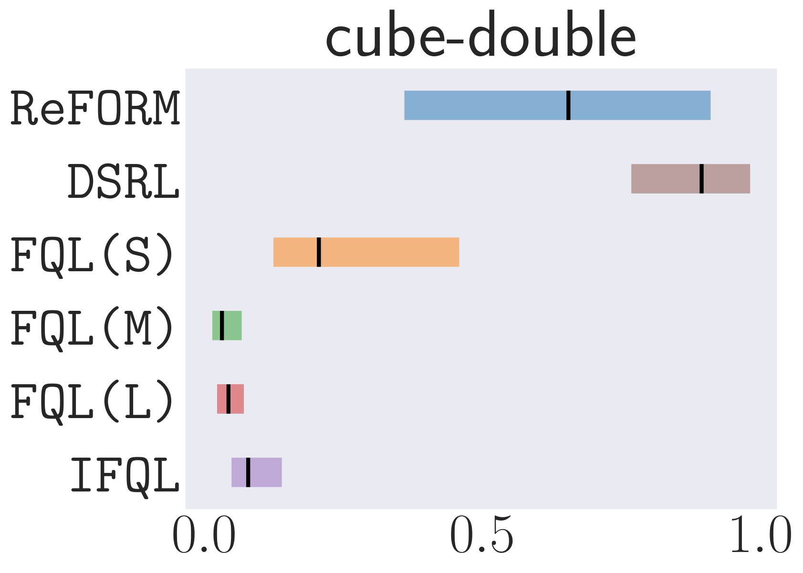
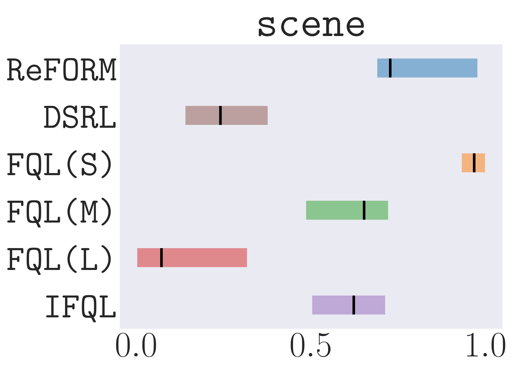
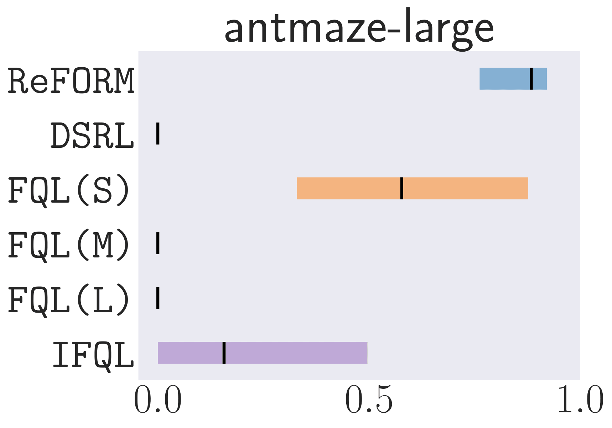
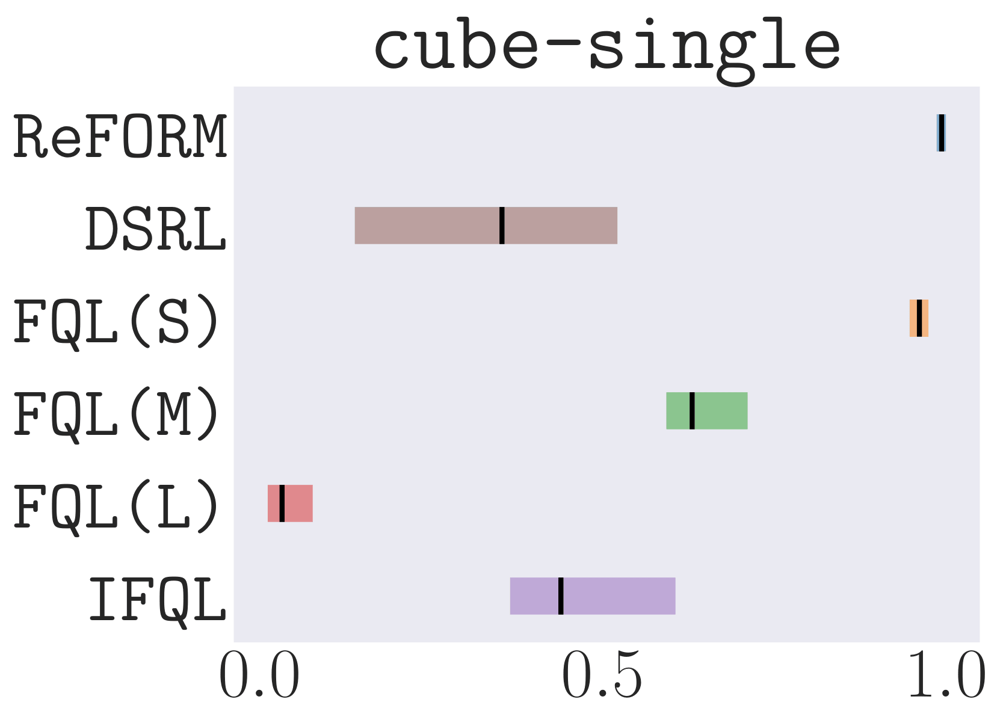
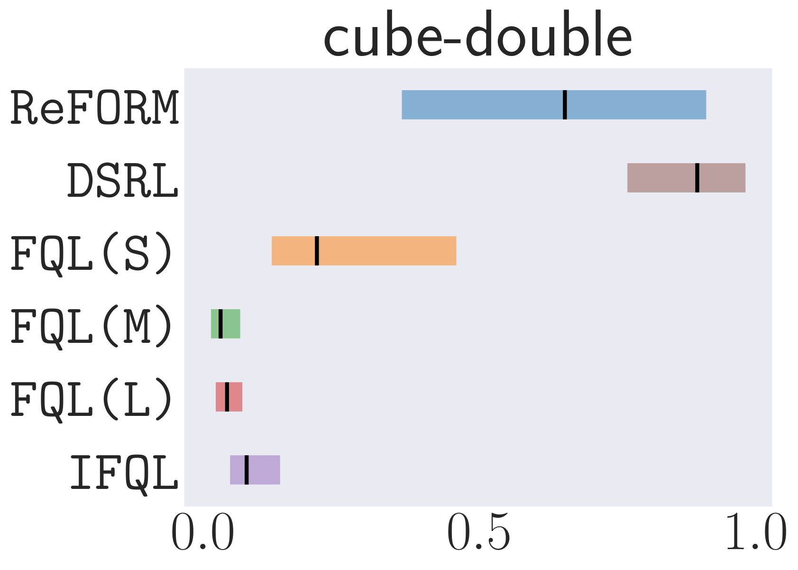
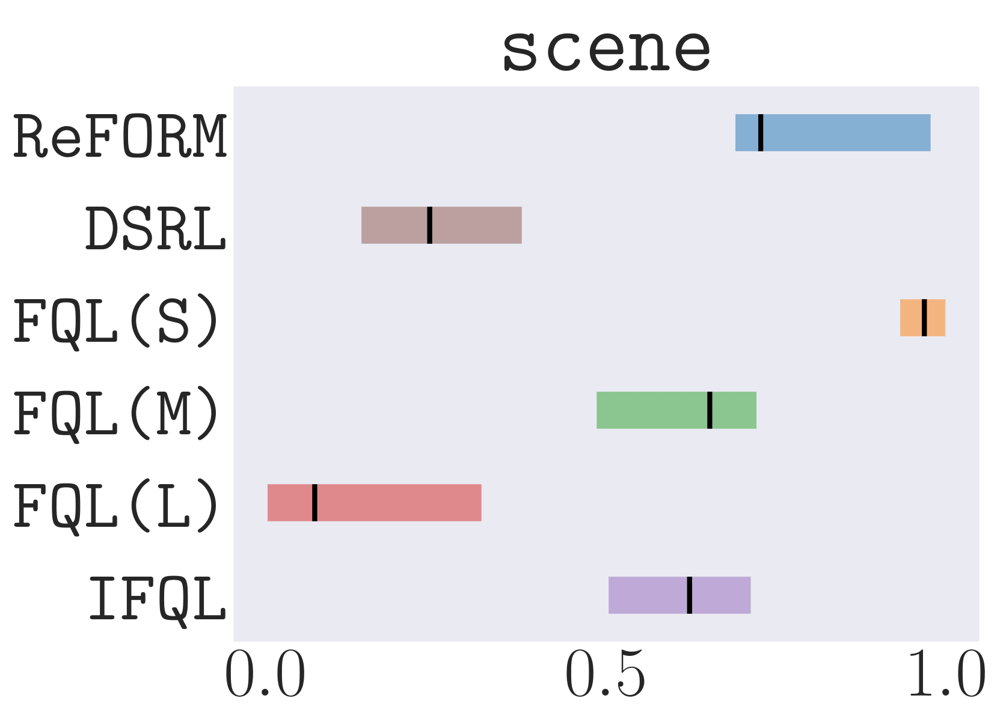

Overview
- ReFORM is an offline RL algorithm which utilizes flow-based policies to enforce the support constraint by construction, avoiding out-of-distribution errors without constraining policy improvement.
- We propose applying reflected flow to generate constrained multimodal noise for the BC flow policy, thereby mitigating OOD errors while maintaining the multimodal policy.
- Extensive experiments on 40 challenging tasks with datasets of different qualities demonstrate that, with a constant set of hyperparameters, ReFORM dominates all baselines using flow policy structures with the best hand-tuned hyperparameters on the performance profile curve.


 






